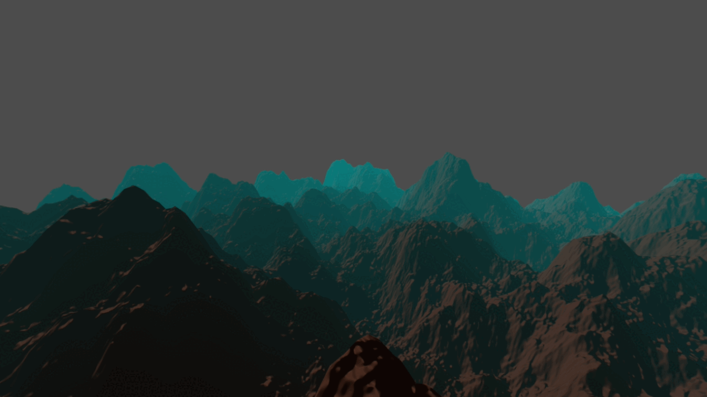

WAY2TERRAIN
Project Status: Finished
Project Type: Game jam
Project Duration: 21 Days
Software Used: Godot 4.4
Plugins Used: Sky3D
Languages: GDScript, GDShader, GLSL
About Dirt Jam
The Dirt Jam was a month-long community event run by Acerola to encourage participants to get started learning graphics and shader programming. Making use of Godot's Compositor effects. Due to nature of these, you get to explore rendering concepts hands-on without the assistance of commercial engines.
GitHub | Itch.io | Technical PRs
Highlights
- Shader Include System
- Blinn–Phong Lighting
- Triplanar Texture Mapping
Intro
The goal was to make an improvement to the base class, no matter how little. The idea behind it is to learn how terrain generation works. From terrain data to, rendering.

Methods for creating the terrain data range from hand sculpting landscapes in ZBrush or Blender. You can't have one without the other. If you can generate terrain data but can't see it, then the data is useless. And if you can render it but don't have any data, then all you have is a flat plane.
Development
I started by analyzing the source code's structure and annotations, to understand the basics. Eventually implementing 6~7 features in total, some 'Visual' some related to 'Tooling'.
Rendering Fog

In this GIF, you'll get an overview of the logic required to render multiple types of 'Distance Fog'.
Starting off with beginner challenges such as: Distance Fog, Shader Includes, Level of Detail and improving Lightning model.
Code Snippet: Beer's Law

The relationship between the absorption of light and its path length.
world_pos refers to the position in the world of a pixel.
IMAGE: Mockup 1

Here you see Distance Fog, and the other 3 features applied to the terrain.
I also experimented with post-processing (image effects) to make it look prettier.
For the other tasks, please refer to these links for further technical detail & breakdown:
PR: 2 Shader Include,
PR: 3 Level of Detail,
PR: 4 Lighting,
PR: 5 PCG3D.
Now onto an intermediate feature: Texture Mapping, this one gave me lots of trouble.
At the cost of not losing my sanity after 4 different approaches to the problem,
I decided to seek help on the matter.

Here you see 4 different textures applied to the terrain.
Conclusion
I've learned a lot during this project such as core concepts in the graphics field of programming.
To name a few:
-
GPU Data Alignment
Generating Terrain Data
Rendering Terrain Data
Compositor Effects (Godot)
Graphics APIs (Vulkan, SPIR-V)
“Think of UBO memory like an inventory grid.
Each data type has its own slot size, and a row can only hold 4 slots.
Bigger items (like vec3 and vec4) get VIP spots at the start of the row,
and smaller items fill in the gaps.
If the order changes on the CPU side, you have to re-pack the layout to match on the GPU side.”

How I felt writing that, Source: Kris & Jen
But of course much more than that which I won't detail here other than the analogy, I came up with trying to understand the concept of 'alignment'. Thanks for reading.
Gallery
Collection of unused visuals that would only collect dust if not shown here!
Linear Fog -> Specular Highlights

Cloud experimentation

Glacial peaks at sunset

Moodboard of 'Cloud Rap' & 'Underground' inspo

All 3 logo designs based off background image

AI generated based off mood board and in-game scenes
Final Product Visual